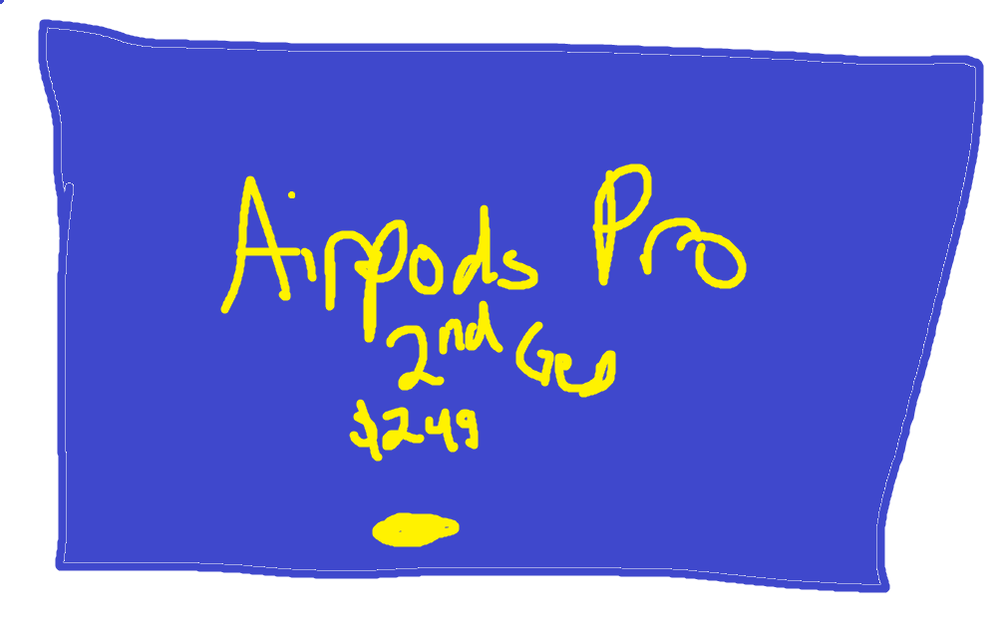

Hi. I'm Tommy Phan.
And this is my portfolio, where I will display my projects and capabilities.
Read some more about what I do
And this is my portfolio, where I will display my projects and capabilities.
Read some more about what I doPublished on August 24, 2023
For this chapter, I chose the word "Design" as this chapter really dives deep into the design of things. For example, if something so simple is poorly designed it may cause problems for the user. He introduced the term "Norman Doors", doors in which are they are confusing to operate. The overall idea is that something so simple as a door, which has two functions, to open and to close, can become a problematic concept if the design of the door is flawed in any way whatsoever.
Published on August 24, 2023
For this chapter, I would choose the word "Interaction", because it encapsulates the interaction between connection and exchange of actions, reactions, and feedback between the user and their environment. The landlady's attempt to retrieve papers from the filing cabinet involves a series of interactions between the lady and the cabinet.
Published on August 24, 2023
The word I will be choosing is "Scanning", which describes how users perceive things in their daily lives. They will go around and scan with their eyes first and any sort of design that causes a strain or too much c lutter will make the user scanning and perception a lot slower. This is very similar to saying "We eat with our eyes first."
Published on September 11, 2023
I related to the reading's discussion of "Signal vs. Noise Ratio" (SNR) in many ways. It makes me think of a crucial time in my career when I organized a disorganized presentation. The presentation changed as a result of using SNR principles—removing unnecessary information, concentrating on important ideas, and including an emotionally engaging story. The message was received and appreciated by the audience, which had a positive result. This experience brought home how important SNR is to design and communication: clarity and engagement take precedence over clutter. It's a lesson I've applied to my career, promoting clarity and proportion in efficient communication.
Published on September 12, 2023
As volume is to music, saturation is to color. The intensity of colors in a design or piece of artwork can produce a variety of visual effects
and express different meanings, just as the volume of a musical piece can provoke distinct emotions and set the mood. High saturation colors
can be energizing and attention-getting, much like a loud, passionate piece of music. On the other hand, low-volume gentle music can be calming,
much as muted or pastel colors that produce a tranquil visual experience.
Similar to how a musician might control the loudness to elicit the desired emotional response in their listeners, understanding the concept of
saturation aids in creating visual compositions that effectively communicate with and resonate with the target audience.
Published on September 15, 2023
There is more to color than meets the eye; it serves as a useful tool in design. As a designer, I recognize that color has more uses than just aesthetic appeal. It can successfully convey ideas and feelings. Choosing the appropriate colors for the task at hand is more important than learning color theory. Colors define brand identities, set the mood for websites, and rationally guide consumers through designs. Consider it as a designer's toolkit where we choose colors to produce images that appeal to the viewer. In my professional life, I'm conscious of the fact that design is about having clear communication, and color is how we do that.
Published on September 18, 2023
I decided on the word "Navigation" since it encompasses a key idea covered in the reading. Effective navigation skills are necessary for both the physical world of websites and the virtual world of malls. In my line of work, user experience (UX) design, where developing clear and user-friendly navigation is essential, it's important to keep in mind. Whether it's on a website or at a store, users should be able to quickly find what they need. Knowing the fundamentals of navigation enables me to create user interfaces that effectively direct users and improve their overall experience.
Published on September 18, 2023

Apple's color scheme can be seen as a harmonious combination, with white and black creating a strong contrast and gray serving as a transitional element between them.
The color scheme of Apple conveys a sense of refinement, professionalism, and minimalism.
Users should perceive Apple goods as being svelte, contemporary, and dependable, according to the designers.
While sporadic splashes of red and green inject energy and hint at innovation, the combination of white, black, and gray produces a neutral and user-friendly workplace.

This version uses a contrasting color scheme with bright blue and vivid yellow to create a visually stimulating and lively mood.
Blue symbolizes trust and reliability, while yellow adds energy and optimism.
In this version, a combination of charcoal black and cool gray maintains a minimalist and professional atmosphere.
Silver accents add a touch of sophistication and highlight key elements effectively.
This color scheme combines crimson red and vibrant green to create a fresh and dynamic mood. Red symbolizes passion and energy,
while green signifies growth and innovation.
I think that using black and white keeps an minimlaistic look, which Apple tends to strive for, but having other colors will make the user
stay engaged and look at the things they highlight.
Published on September 19, 2023
The term "Responsive Layout" was introduced in the reading, highlighting the necessity for designs to adjust to shifting format sizes, such as various screen sizes. I'll use a screenshot of a responsive web layout as an example to explain this notion. This is a good example for the guidelines, because the image shows the variation in layout depending on the device the user is using.
Published on September 22 2023
I've emphasized the essential elements of typography in design in my concept map. The use of appropriate font sizes, weights, and styles is essential to producing successful designs. For user comprehension, readability elements like line height and letter spacing are crucial. A consistent and enjoyable user experience is made possible by a typographic scale and aesthetic harmony. My job as a designer depends on my ability to comprehend these linkages because they are the basis of clear design communication.
My job as a designer depends on my ability to comprehend these linkages because they are the basis of clear design communication.
Published on September 26, 2023
As headlines are to news items, taglines are to websites. A well-written tagline on a website's main page draws visitors'
attention and gives them a brief summary of what the website is about, much like a great headline does for readers,
who get a glimpse of the article's content. Just as a tagline should express the spirit of the website and attract visitors to investigate deeper,
a headline should be informed and intriguing. The objective is to captivate the audience and persuade them to learn more about the subject matter
in both situations.
This idea is key to keep in mind since, whether I'm designing websites or writing material, the ability to create compelling taglines
or headlines is essential for capturing visitors' attention and persuading them to pay attention to the main message.
Published on September 29, 2023
"Feedback is a Designer's Compass" Feedback acts as a compass for designers, providing guidance, pointing out the appropriate path, and assisting them in navigating the complexity of design difficulties, just like a compass helps explorers through uncharted territory. Designers rely on feedback to influence their judgments and continuously improve their work, just like explorers do while navigating new terrain with a compass. This comparison highlights the value of feedback in design and how it relates to having a successful career.
Published on October 2, 2023
I settled on the word "Visualization" because it perfectly sums up the main idea covered in the reading. The technique of graphically portraying facts or information to make it easier to grasp and analyze is known as visualization. In my line of work, proficiency in producing powerful visualizations is essential, particularly in data analysis and user interface design. It facilitates the conveyance of difficult information to stakeholders and makes it more approachable and intuitive. In order to produce visual representations that are not only visually beautiful but also educational and user-friendly, it is imperative for me to have a solid understanding of visualization principles.
Published on October 6, 2023
Published on October 8, 2023
Ensuring the triangles in a triangle-based snake quilt fit perfectly is essential.
The triangles line up to create a smooth snake-like route.
This balance makes the snake's design aesthetically pleasing and harmonious.
To focus the viewer's gaze along the winding snake pattern, use of placement and direction of the triangular segments
guides the spectator through the snake's journey.
The use of purple on the edges of the snake ensures the eyes maintain focus on the shape of the snake.
The use of dark triangles on the border keeps the eyes focused center of the quilt.
With this little meditation mobile app, each step of the meditation process is being flow controlled by the contrasting design, and flow of lines to focus the user around the circle for each step.
Published on October 9, 2023
"Enthusiasm is to creativity as fuel is to a rocket." Like fuel propels a rocket into orbit, enthusiasm advances invention. Like a rocket won't launch without fuel, creative thinking stagnates in the absence of enthusiasm. The drive and inspiration required to test out novel concepts, take chances, and eventually achieve greater levels of innovation and achievement come from enthusiasm.
Published on October 17, 2023
The word "usability" was my choice because it captures the main idea of the book and is a key notion in the reading. In my job as a web developer, it is essential to comprehend usability in web design and the value of usability testing. It serves as a reminder that making user-friendly and effective websites is not about catering to personal preferences but rather about giving all users a satisfying experience.
Published on October 19, 2023
"Usability Testing is to Web Design as a Test Drive is to Buying a Car." Usability testing in online design aids designers and developers in understanding how users interact with a website, just like a test drive enables prospective car buyers to assess the performance, comfort, and suitability of the vehicle for their purposes. Much like how people evaluate whether a car fulfills their needs after taking it for a test drive, it offers insightful information about what works and what doesn't. Making educated judgments and providing a positive user experience depend on both of these tasks.
Published on October 21, 2023
Published on October 22, 2023
I related to the part about fending off dark powers. It draws attention to the moral dimensions of user experience and usability design. As UX experts, we must never forget that it is our duty to meet the requirements of users rather than utilize them to further our own interests. The comparison to Robert Cialdini's influence book serves as a potent reminder that while it's necessary to understand human behavior, it should be applied ethically to improve user experiences rather than take advantage of them. It serves as an essential moral compass for my work in UX design.
Published on October 24, 2023
My term for this section of the reading is guidelines. In the realm of user experience design, it is essential to comprehend the idea of guidelines. Guidelines offer precise directions and guidelines for creating user-friendly systems and products. They aid designers in producing interfaces that are simple for users to use and comprehend. The design will be in line with users' expectations and cultural norms if standards are followed.
Ornare nulla proin odio consequat sapien vestibulum ipsum.